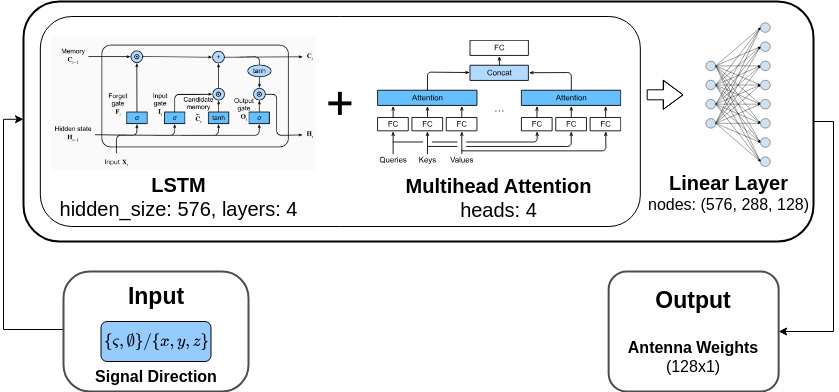
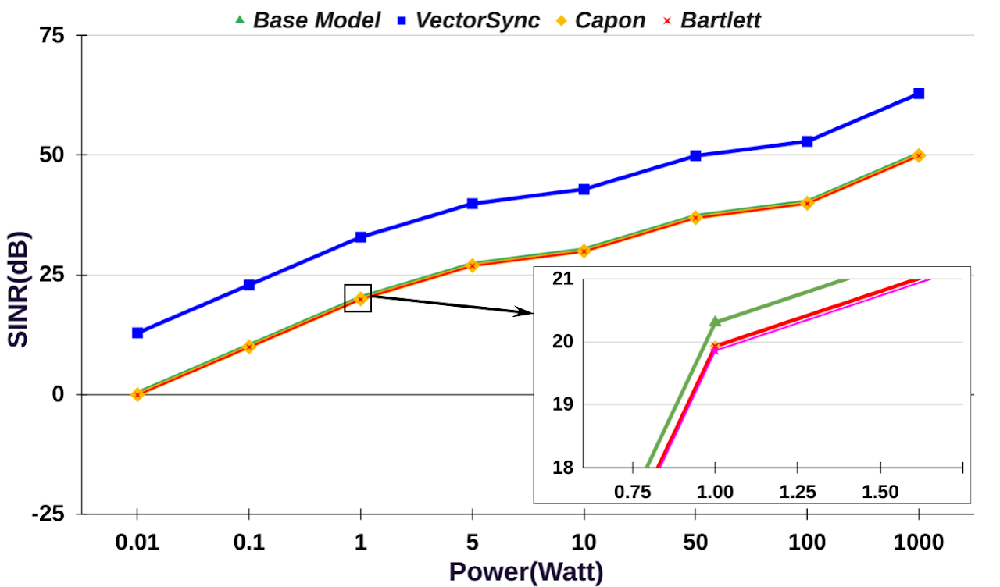
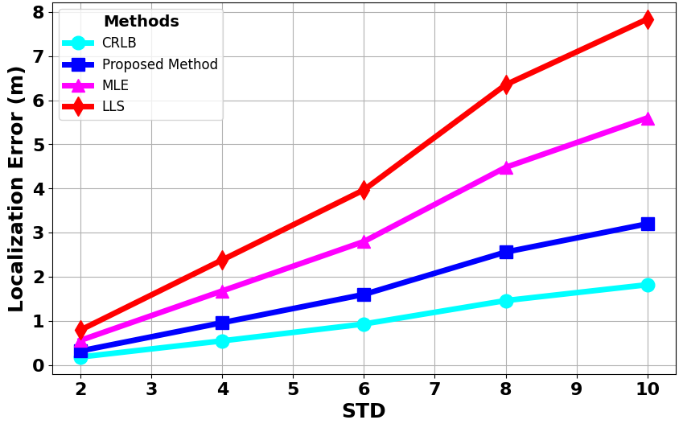
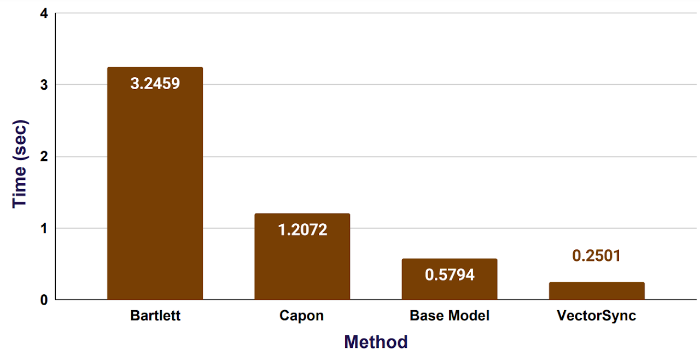
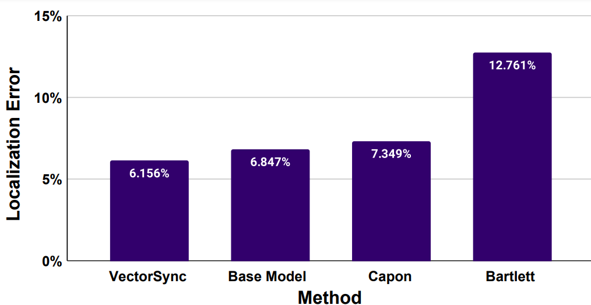

Localizing nodes in time-varying Internet of Things (IoT) networks is challenging owing to increasing latency and low Signal-to-Interference plus Noise Ratio (SINR) at the Base Station (BS). Reconfigurable Intelligent Surface (RIS) technology has been deployed between transmitter and receiver to enhance signal strength at the BS. New phase prediction approaches and optimum weight assignment frameworks have been suggested for RIS and BSs. However, these approaches perform poorly due to their heuristic approach, resulting in increased time consumption and low SINR. The project presents a novel node localization approach for a RIS-assisted time-varying IoT network utilizing Machine Learning (ML) frameworks to address the aforementioned problems.

Dynamic UE Position
We created a dynamic simulation setup in which the signal is first sent from the User Equipment (UE) and then reflected at the RIS. At the BS, correlation is carefully calculated between direct UE signals and reflected RIS signals. This connection aids in the precise determination of the UE's position. To ensure the applicability and adaptability of the proposed solutions across a variety of contexts, UE placements are dynamically changed in many locations, and the results are provided as an average.
Coff2Phase at RIS
The coeff2phaseNN approach is presented to forecast phase shifts at the RIS. A thorough study is conducted to assess the robustness of the proposed architecture and compare its efficacy to other ML approaches. Compared to current techniques, the model outperforms the previously suggested ANN-RIS architecture by Amit et al. in terms of predicted angle and mean squared error (MSE) loss.
VectorSync at BS
The proposed model VectorSync is an attention-based Long Short-Term Memory (LSTM) architecture at the BS for predicting antenna weight to gain optimal beamforming. The model's inputs are carefully selected; these comprise angles with direction vectors of signals, all absent in earlier studies. This technique surpasses traditional methods regarding SINR, consumed time, and Localization Error (LR). The results show a significant improvement in SINR, reaching 32.308 dB, greater than traditional approaches and the ML solution in Mallioras et al. (base model).
Results
SINR vs Power at UE
The performance is measured in terms of SINR response with varied input power. It is noticed that the suggested technique has the greatest SINR for lower input power values, followed by the base, capon, and Bartlett methods. The figure shows how SINR at the BS varies with input power. When the input power is set to 1-watt, it results in a 32.85 dB SINR at the BS using our proposed technique. The base model has a SINR of 20.435 dB, whereas the Capon technique has a SINR of 19.95 dB. Despite low input power, our suggested technique obtains the greatest SINR at the BS.

Localization Error vs Phase Error STD
The relationship between LR and phase error (after correlation) standard deviation (STD). The plot illustrates that when the STD is 6, the CRLB reaches an LR of 0.9 m. The proposed method works incredibly well, with an LR of 1.6 m, which is quite near to the Cramer Rao Lower Bound (CRLB). In comparison, the Maximum Likelihood Estimation (MLE) approach has an LR of 2.8 m, and the Linear Least Squares (LLS) method has a higher error of 4 meters. This demonstrates the substantial accuracy of our proposed method, which closely aligns with the theoretical CRLB.

Time Delay vs Method
The delay study compares the proposed VectorSync method's time consumption to other available methods. The VectorSync approach takes 0.25 seconds to localize, whereas the base model, Capon, and Bartlett methods take 0.5794, 1.20, and 3.2459 seconds, respectively. The proposed method has the shortest delay, making it the fastest among all the methods compared.

Localization Error vs Method
The resultant LR is from four distinct beamforming techniques, including the suggested technique. VectorSync demonstrates a remarkably low LR of 6.156%, indicating its accuracy in position estimates. However, other approaches like Bartlett and Capon show poorer levels of effectiveness and larger errors.

Conclusion
This project addresses the challenge of node localization in time-varying IoT networks by leveraging ML frameworks with RIS. Our novel approach optimizes RIS phase configuration and antenna weight assignment at the BS using the coeff2phaseNN and VectorSync models, respectively. Experimental results show significant improvements in signal quality, time efficiency, and localization accuracy compared to traditional methods, demonstrating the potential of integrating ML with RIS for advanced IoT network management.